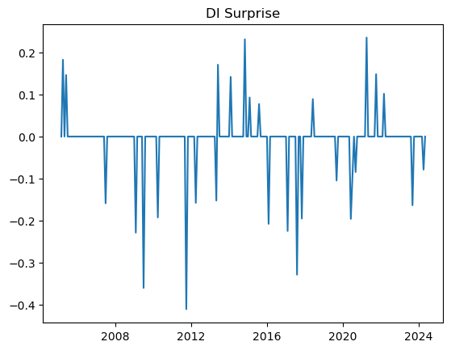
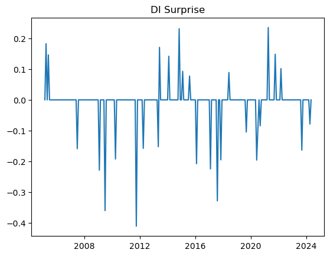
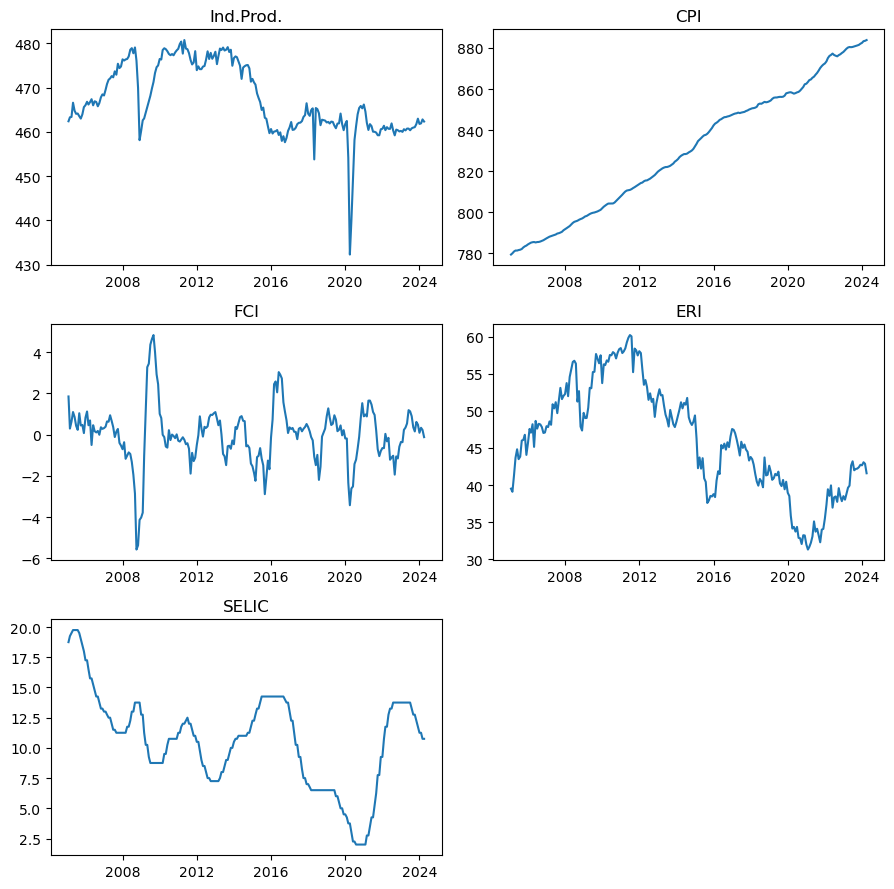
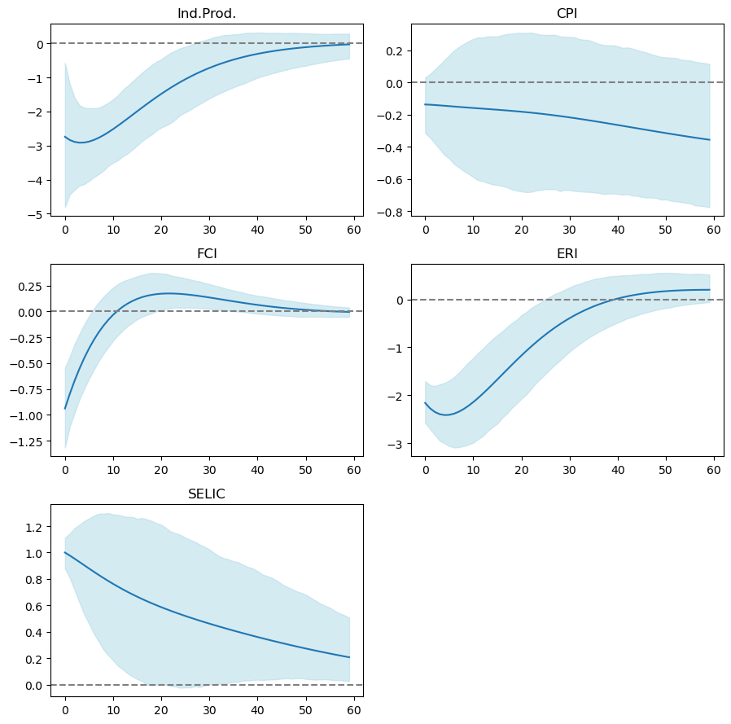

Text(0.5, 1.0, 'DI Surprise')
This work presents a methodology to identify Monetary Policy Shocks in Brazil using a daily frequency data. The present methodology was based in Ferreira Neto (2023) on his adaptation of Gertler and Karadi (2015) for Brazil. Our thanks to Juliano Ferreira Neto for providing all the support necessary for this work.
Monetary policy shocks are defined as unexpected changes in the monetary policy, in most cases, observed in the interest rates. These shocks are important sources of business cycle variations, in a sense that economic variables have significant reactions to that. As we will see next, indentifying these shocks are key to understand future economic dynamics.
In the sections below we will present the data used in macroeconomic variables as well as the identification strategy for the monetary policy shocks in Brazil. Furthermore, we estimate a Mertens and Ravn (2013) Proxy-SVAR to understand the reaction of the macroeconomic variables to these shocks. This routine can be easily implemented for a better understanding on the impacts of COPOM interest rate decisions.
In this section we identify the monetary policy shocks by finding surprises on the DI futures market.
About futures DI market: The future contracts of DI1 traded on B3 is a derivative of the CDI, average of interbank deposit rates, and because of that, it presents a narrow relation to SELIC rates (Brazilian federal funds rate). Currently, DI1 is the main interest rate derivative traded in Brazil, and because of that, it can reflect the expectations of the market for the SELIC rates in the future. In this sense, differences between the rates in which agents are trading DI1 futures and the actual SELIC oscilations can be interpreted as a shock.
The DI Surprise is defined as the difference between the DI1 futures rate one day after the COPOM meeting subtracted by the forward rate of the DI1 futures traded at the day of the COPOM meeting decision, both with same maturity. We use the forward rate because it is a cleaner measure of implicit expectation for future interest rates. It follows the equation:
\[ DI Surprise_{t+1} = Taxa DI Futuro_{t+1} - Taxa Forward_t \]
where
\[Taxa Forward_t = 100* \left(\left(\frac{\left(1+ \frac{fut}{100} \right)^{\frac{duf}{252}}}{\left(1+ \frac{cdi}{100} \right)^{\frac{duc}{252}}} \right)^{\frac{252}{duf-duc}} - 1 \right)\]
COPOM meetings: Dates from all COPOM meetings available in the Brazilian Central Bank website: https://www.bcb.gov.br/controleinflacao/historicotaxasjuros
DI1 contracts: Collect the first and second closest maturity DI1 contracts for each COPOM meeting day. In Bloomberg look for the derivatives OD1 Comdty and OD2 Comdty (closest and second closest), then collect the fields:
open: for the oppening traded rate.px_settle: for settlement rate.FUT_BUS_DAYS_VAL: number of business days up to the maturity of the contract.Do the following filter: For each COPOM meeting day \(t\), if the DI1 contract with closest maturity (OD1 Comdty) expires in less than three business days, then consider the DI1 contract with the second closest maturity (OD2 Comdty), else, consider OD1 Comdty. We make this filter because these contracts present a high volatility when approximating from the maturity.
CDI: Daily CDI interest rates available in ANBIMA or Bloomberg.
After computing the DI Surprise series using the collected data, as sugested by Ferreira Neto (2023), it is necessary to remove unnecessary volatility of this measure by applying the following filter: * Before 2014: set to 0 all the observations that are between -0.145 and 0.145. * From 2014 onwards: set to 0 all the observations that are between -0.07 and 0.07.
The result is:
Text(0.5, 1.0, 'DI Surprise')
The purpose is to collect variables that, theoretically, respond directly to monetary policy shocks. The variables used are:
BZIPTLSA. \(\textit{(in log)}\)The dataset has monthly frequency and starts in February 2005 due to data restrictions on the FCI index. Exchange Rate Index and Financial Conditions Indicator are built in the next sections.

This index is composed by a basket of foreign currencies against Brazilian Real. The basket is composed by the currencies of the following countries, after converted in US dolar: South Africa, Australia, Canada, New Zeland, Indonesia, Chile, Colombia, Mexico. To compute such measure we use the following formula:
\[ERI_t = \frac{BRLUSD_t}{FXJPEMCI_t} * 1000\]
FXJPEMCI.The FCI is contructed by Ferreira Neto (2023) as a measure of the financial channel, one of the channels for transmission of the monetary policy shock. It collects information about the financial system, such as capital and credit markets movements. The data used to compose the index are:
BRAZIL CDS USD SR 2Y Corp.BCSFFPDV CMPN Curncy.BRCDDEFT.The dataset frequency is set to be monthly as well. First, for each variable \(i\) above, at each observation at time \(t\) subtract its respective rolling average from the last 12 months.
\[RollingDiff_{i,t} = X_{i,t} - \frac{1}{12}\sum^{11}_{\tau=0}X_{i,t-\tau}\]
Now to standardize data, we compute z-score filter for \(RollingDiff_{i,t}\).
\[ZScore_{i,t} = \frac{RollingDiff_{i,t} - Avg(RollingDiff_{i})}{StdDev(RollingDiff_{i})}\]
After applying the filter in the dataset, we run a Principal Component Analysis (PCA), recovering only one Principal Component. This final Principal Component is our Financial Conditions Indicator.
Here we are going to compute the Impulse Response Functions of the Macroeconomic variables to an unexpected shock in the SELIC rate. For that, we estimate a Mertens and Ravn (2013) Proxy-SVAR model which is a Structural Vector Autoregressive model with a Proxy for the monetary policy instrument (SELIC), defined as the DI Surprise measure computed above. For the Proxy-SVAR estimation we use Tyler’s (2022) sovereign package in R.
Below we can see the economy’s reaction to a SELIC shock normalized to 100bps, identified by DI Surprise measure. Confidence intervals where set to 90% interval with correction for heteroskedatic errors (\(\textit{wild bootstrap}\)).
Note that for such shock, in our model, Exchange Rate and Financial Conditions have both significant and expressive reaction, as expected, dropping to lower levels when facing a negative MP shock. Meanwhile, although significant, the response of Industrial Production reacts negatively but such response is not expressive, being almost null. Even though Inflation have a median negative response, its confidence intervals show that it is not statistically different than zero, presenting possible positive responses scenarios, the so called Price Puzzle.
